The Parabola
Learning Objectives
- Graph vertical parabolas. (IA 11.2.1)
- Graph horizontal parabolas. (IA 11.2.2)
Objective 1: Graph vertical parabolas. (IA 11.2.1)
A parabola is all points in a plane that are the same distance from a fixed point and a fixed line. The fixed point is called the focus, and the fixed line is called the directrix of the parabola.

Previously, we learned to graph vertical parabolas from the general form or the standard form using properties. Those methods will also work here.
| Vertical Parabolas | ||
|---|---|---|
|
General form
|
Standard form
|
|
| Orientation | up; down | up; down |
| Axis of symmetry | ||
Graph .
Solution
| Since a is the parabola opens downward. | |
| To find the axis of symmetry, find | |
| The axis of symmetry is | |
|
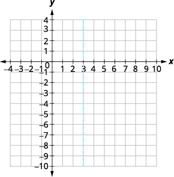 |
|
| The vertex is on the line | |
| Let | |
| The vertex is | |
|
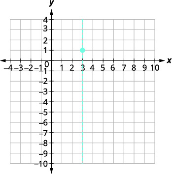 |
|
| The y -intercept occurs when | |
| Substitute | |
| Simplify. | |
| The y -intercept is | |
|
The point
is three units to the left of the
line of symmetry. The point three units to the right of the line of symmetry is |
Point symmetric to the y -intercept is |
|
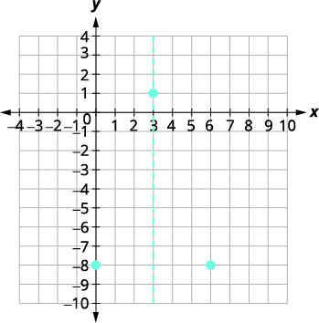 |
|
| The x -intercept occurs when | |
| Let | |
| Factor the GCF. | |
| Factor the trinomial. | |
| Solve for x . | |
| The x -intercepts are | |
| Graph the parabola. |
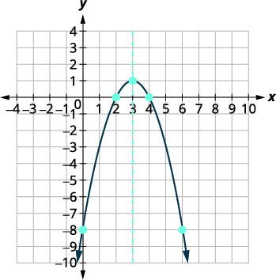 |
Practice Makes Perfect
Graph vertical parabolas.
Graph .
Graph .
Objective 2: Graph horizontal parabolas. (IA 11.2.2)
Our work so far has only dealt with parabolas that open up or down. We are now going to look at horizontal parabolas. These parabolas open either to the left or to the right. If we interchange the x and y in our previous equations for parabolas, we get the equations for the parabolas that open to the left or to the right.
| Horizontal Parabolas | ||
|---|---|---|
|
General form
|
Standard form
|
|
| Orientation | right; left | right; left |
| Vertex |
Substitute
and
solve for x . |
|
| Axis of symmetry | ||
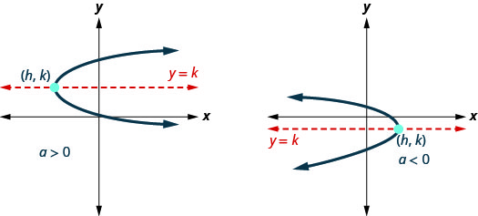
Graph horizontal parabolas.
Graph .
Solution
| Identify the constants a, h, k . | |
| Since the parabola opens to the right. | |
| The axis of symmetry is | The axis of symmetry is |
| The vertex is | The vertex is |
| Find the x -intercept by substituting | |
| The x -intercept is | |
|
Find the point symmetric to
across the
axis of symmetry. |
|
| Find the y -intercepts. Let | |
|
A square cannot be negative, so there is no real
solution. So there are no y -intercepts. |
|
| Graph the parabola. |
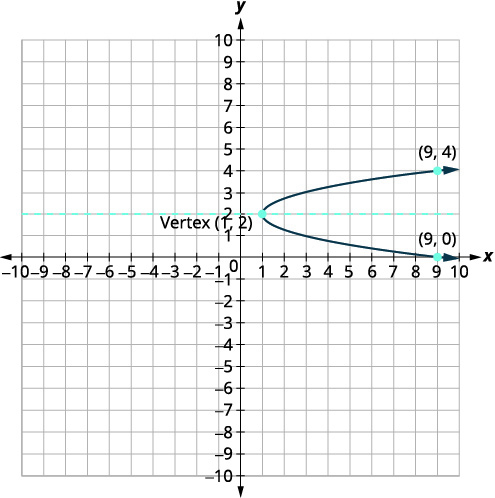 |
Practice Makes Perfect
Graph .
Graph .
Katherine Johnson is the pioneering NASA mathematician who was integral to the successful and safe flight and return of many human missions as well as satellites. Prior to the work featured in the movie Hidden Figures, she had already made major contributions to the space program. She provided trajectory analysis for the Mercury mission, in which Alan Shepard became the first American to reach space, and she and engineer Ted Sopinski authored a monumental paper regarding placing an object in a precise orbital position and having it return safely to Earth. Many of the orbits she determined were made up of parabolas, and her ability to combine different types of math enabled an unprecedented level of precision. Johnson said, "You tell me when you want it and where you want it to land, and I'll do it backwards and tell you when to take off."
Johnson's work on parabolic orbits and other complex mathematics resulted in successful orbits, Moon landings, and the development of the Space Shuttle program. Applications of parabolas are also critical to other areas of science. Parabolic mirrors (or reflectors) are able to capture energy and focus it to a single point. The advantages of this property are evidenced by the vast list of parabolic objects we use every day: satellite dishes, suspension bridges, telescopes, microphones, spotlights, and car headlights, to name a few. Parabolic reflectors are also used in alternative energy devices, such as solar cookers and water heaters, because they are inexpensive to manufacture and need little maintenance. In this section we will explore the parabola and its uses, including low-cost, energy-efficient solar designs.
Graphing Parabolas with Vertices at the Origin
In The Ellipse, we saw that an ellipse is formed when a plane cuts through a right circular cone. If the plane is parallel to the edge of the cone, an unbounded curve is formed. This curve is a parabola. See Figure 2.
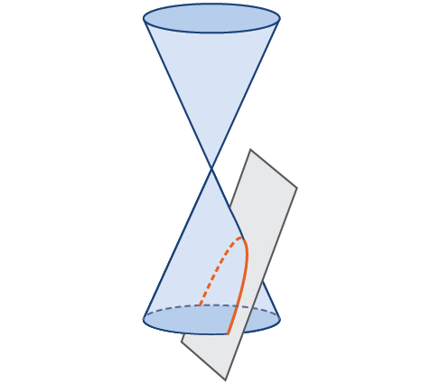
Like the ellipse and hyperbola, the parabola can also be defined by a set of points in the coordinate plane. A parabola is the set of all points in a plane that are the same distance from a fixed line, called the directrix, and a fixed point (the focus) not on the directrix.
In Quadratic Functions, we learned about a parabola’s vertex and axis of symmetry. Now we extend the discussion to include other key features of the parabola. See Figure 3. Notice that the axis of symmetry passes through the focus and vertex and is perpendicular to the directrix. The vertex is the midpoint between the directrix and the focus.
The line segment that passes through the focus and is parallel to the directrix is called the latus rectum. The endpoints of the latus rectum lie on the curve. By definition, the distance from the focus to any point on the parabola is equal to the distance from to the directrix.
![This image displays a parabola on a Cartesian coordinate plane, clearly labeling its fundamental geometric elements. The blue curve represents the parabola itself. The "Vertex" is indicated as the turning point of the parabola. Inside the curve, the "Focus" is marked, a critical point for defining the parabola. A dashed orange line, labeled "Axis of symmetry", passes vertically through both the vertex and the focus. Below the vertex, a horizontal dashed red line shows the "Directrix". Finally, a horizontal dashed blue line segment passing through the focus and extending to the parabola is identified as the "Latus rectum".](../../media/CNX_Precalc_Figure_10_03_003n.jpg)
To work with parabolas in the coordinate plane, we consider two cases: those with a vertex at the origin and those with a vertex at a point other than the origin. We begin with the former.
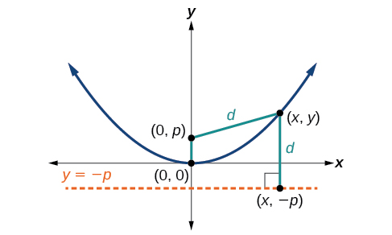
Let be a point on the parabola with vertex focus and directrix as shown in Figure 4. The distance from point to point on the directrix is the difference of the y-values: The distance from the focus to the point is also equal to and can be expressed using the distance formula.
Set the two expressions for equal to each other and solve for to derive the equation of the parabola. We do this because the distance from to equals the distance from to
We then square both sides of the equation, expand the squared terms, and simplify by combining like terms.
The equations of parabolas with vertex are when the x-axis is the axis of symmetry and when the y-axis is the axis of symmetry. These standard forms are given below, along with their general graphs and key features.
The key features of a parabola are its vertex, axis of symmetry, focus, directrix, and latus rectum. See Figure 5. When given a standard equation for a parabola centered at the origin, we can easily identify the key features to graph the parabola.
A line is said to be tangent to a curve if it intersects the curve at exactly one point. If we sketch lines tangent to the parabola at the endpoints of the latus rectum, these lines intersect on the axis of symmetry, as shown in Figure 6.
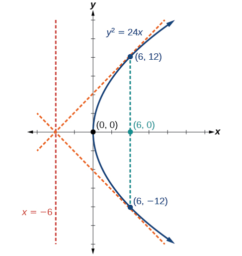
Graphing a Parabola with Vertex (0, 0) and the x-axis as the Axis of Symmetry
Graph Identify and label the focus, directrix, and endpoints of the latus rectum.
Solution
- so Since the parabola opens right
- the coordinates of the focus are
- the equation of the directrix is
- the endpoints of the latus rectum have the same x-coordinate at the focus. To find the endpoints, substitute into the original equation:
Next we plot the focus, directrix, and latus rectum, and draw a smooth curve to form the parabola. Figure 7
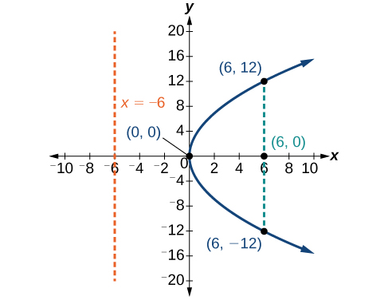
Graphing a Parabola with Vertex (0, 0) and the y-axis as the Axis of Symmetry
Graph Identify and label the focus, directrix, and endpoints of the latus rectum.
Solution
- so Since the parabola opens down.
- the coordinates of the focus are
- the equation of the directrix is
- the endpoints of the latus rectum can be found by substituting into the original equation,
Next we plot the focus, directrix, and latus rectum, and draw a smooth curve to form the parabola.
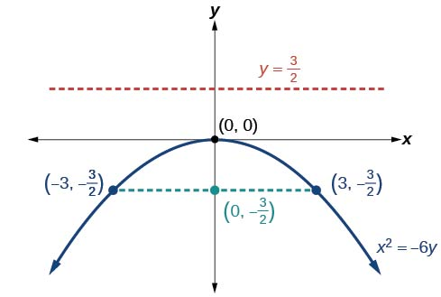
Writing Equations of Parabolas in Standard Form
In the previous examples, we used the standard form equation of a parabola to calculate the locations of its key features. We can also use the calculations in reverse to write an equation for a parabola when given its key features.
Writing the Equation of a Parabola in Standard Form Given its Focus and Directrix
What is the equation for the parabola with focus and directrix
Solution
- Multiplying we have
- Substituting for we have
Therefore, the equation for the parabola is
Graphing Parabolas with Vertices Not at the Origin
Like other graphs we’ve worked with, the graph of a parabola can be translated. If a parabola is translated units horizontally and units vertically, the vertex will be This translation results in the standard form of the equation we saw previously with replaced by and replaced by
To graph parabolas with a vertex other than the origin, we use the standard form for parabolas that have an axis of symmetry parallel to the x-axis, and for parabolas that have an axis of symmetry parallel to the y-axis. These standard forms are given below, along with their general graphs and key features.
Graphing a Parabola with Vertex (h, k) and Axis of Symmetry Parallel to the x-axis
Graph Identify and label the vertex, axis of symmetry, focus, directrix, and endpoints of the latus rectum.
Solution
- the vertex is
- the axis of symmetry is
- so Since the parabola opens left.
- the coordinates of the focus are
- the equation of the directrix is
- the endpoints of the latus rectum are or and
Next we plot the vertex, axis of symmetry, focus, directrix, and latus rectum, and draw a smooth curve to form the parabola. See Figure 10.

Graphing a Parabola from an Equation Given in General Form
Graph Identify and label the vertex, axis of symmetry, focus, directrix, and endpoints of the latus rectum.
Solution
Start by writing the equation of the parabola in standard form. The standard form that applies to the given equation is Thus, the axis of symmetry is parallel to the y-axis. To express the equation of the parabola in this form, we begin by isolating the terms that contain the variable in order to complete the square.
- the vertex is
- the axis of symmetry is
- since and so the parabola opens up
- the coordinates of the focus are
- the equation of the directrix is
- the endpoints of the latus rectum are or and
Next we plot the vertex, axis of symmetry, focus, directrix, and latus rectum, and draw a smooth curve to form the parabola. See Figure 11.

Solving Applied Problems Involving Parabolas
As we mentioned at the beginning of the section, parabolas are used to design many objects we use every day, such as telescopes, suspension bridges, microphones, and radar equipment. Parabolic mirrors, such as the one used to light the Olympic torch, have a very unique reflecting property. When rays of light parallel to the parabola’s axis of symmetry are directed toward any surface of the mirror, the light is reflected directly to the focus. See Figure 12. This is why the Olympic torch is ignited when it is held at the focus of the parabolic mirror.
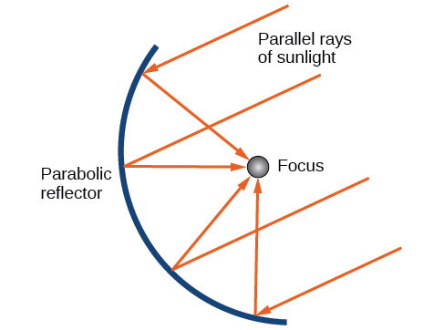
Parabolic mirrors have the ability to focus the sun’s energy to a single point, raising the temperature hundreds of degrees in a matter of seconds. Thus, parabolic mirrors are featured in many low-cost, energy efficient solar products, such as solar cookers, solar heaters, and even travel-sized fire starters.
Solving Applied Problems Involving Parabolas
A cross-section of a design for a travel-sized solar fire starter is shown in Figure 13. The sun’s rays reflect off the parabolic mirror toward an object attached to the igniter. Because the igniter is located at the focus of the parabola, the reflected rays cause the object to burn in just seconds.
- ⓐ Find the equation of the parabola that models the fire starter. Assume that the vertex of the parabolic mirror is the origin of the coordinate plane.
- ⓑ Use the equation found in part ⓐ to find the depth of the fire starter.
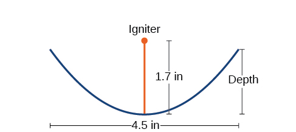
Solution
- ⓐ The vertex of the dish is the origin of the coordinate plane, so the parabola will take the standard form where The igniter, which is the focus, is 1.7 inches above the vertex of the dish. Thus we have
- ⓑ The dish extends inches on either side of the origin. We can substitute 2.25 for in the equation from part (a) to find the depth of the dish.
The dish is about 0.74 inches deep.
Key Equations
| Parabola, vertex at origin, axis of symmetry on x-axis | |
| Parabola, vertex at origin, axis of symmetry on y-axis | |
| Parabola, vertex at axis of symmetry on x-axis | |
| Parabola, vertex at axis of symmetry on y-axis |
Key Concepts
- A parabola is the set of all points in a plane that are the same distance from a fixed line, called the directrix, and a fixed point (the focus) not on the directrix.
- The standard form of a parabola with vertex and the x-axis as its axis of symmetry can be used to graph the parabola. If the parabola opens right. If the parabola opens left. See Example 3.
- The standard form of a parabola with vertex and the y-axis as its axis of symmetry can be used to graph the parabola. If the parabola opens up. If the parabola opens down. See Example 4.
- When given the focus and directrix of a parabola, we can write its equation in standard form. See Example 5.
- The standard form of a parabola with vertex and axis of symmetry parallel to the x-axis can be used to graph the parabola. If the parabola opens right. If the parabola opens left. See Example 6.
- The standard form of a parabola with vertex and axis of symmetry parallel to the y-axis can be used to graph the parabola. If the parabola opens up. If the parabola opens down. See Example 7.
- Real-world situations can be modeled using the standard equations of parabolas. For instance, given the diameter and focus of a cross-section of a parabolic reflector, we can find an equation that models its sides. See Example 8.
Section Exercises
Verbal
Define a parabola in terms of its focus and directrix.
Solution
A parabola is the set of points in the plane that lie equidistant from a fixed point, the focus, and a fixed line, the directrix.
If the equation of a parabola is written in standard form and is positive and the directrix is a vertical line, then what can we conclude about its graph?
If the equation of a parabola is written in standard form and is negative and the directrix is a horizontal line, then what can we conclude about its graph?
Solution
The graph will open down.
What is the effect on the graph of a parabola if its equation in standard form has increasing values of
As the graph of a parabola becomes wider, what will happen to the distance between the focus and directrix?
Solution
The distance between the focus and directrix will increase.
Algebraic
For the following exercises, determine whether the given equation is a parabola. If so, rewrite the equation in standard form.
Solution
yes
Solution
yes
For the following exercises, rewrite the given equation in standard form, and then determine the vertex focus and directrix of the parabola.
Solution
Solution
Solution
Solution
Solution
Solution
Solution
Solution
Solution
Solution
Graphical
For the following exercises, graph the parabola, labeling the focus and the directrix.
Solution
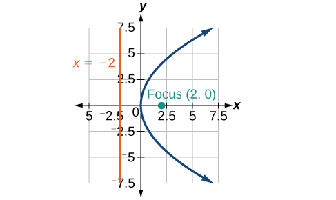
Solution
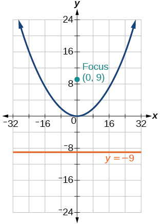
Solution
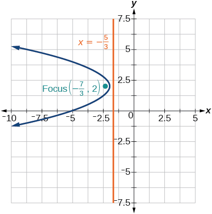
Solution
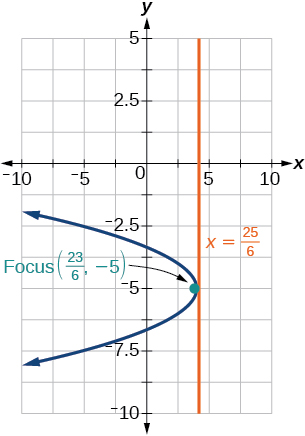
Solution

Solution
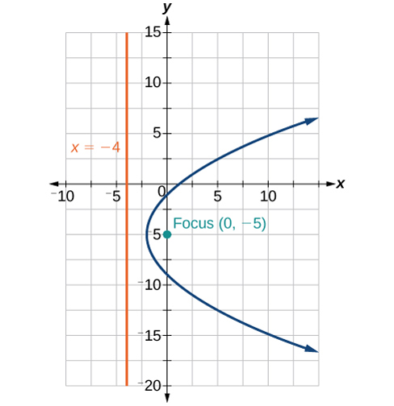
Solution
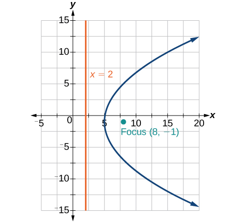
For the following exercises, find the equation of the parabola given information about its graph.
Vertex is directrix is focus is
Solution
Vertex is directrix is focus is
Vertex is directrix is focus is
Solution
Vertex is directrix is focus is
Vertex is directrix is focus is
Solution
Vertex is directrix is focus is
For the following exercises, determine the equation for the parabola from its graph.
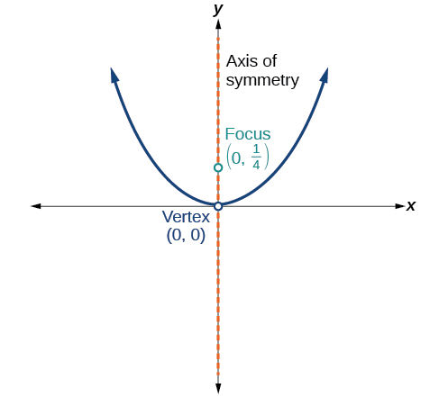
Solution
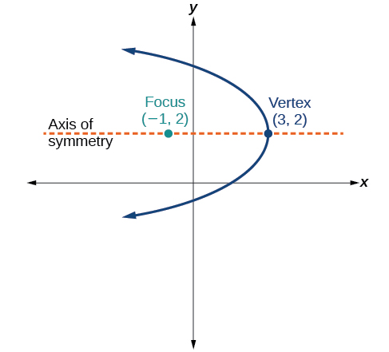
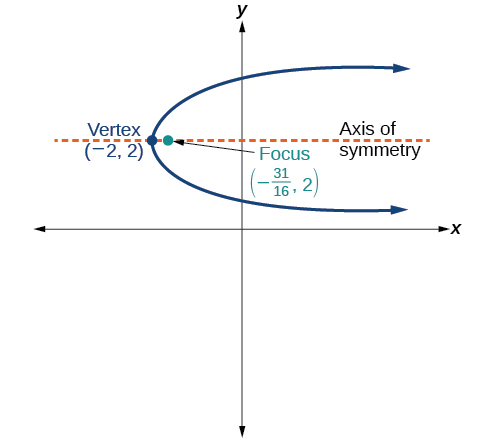
Solution
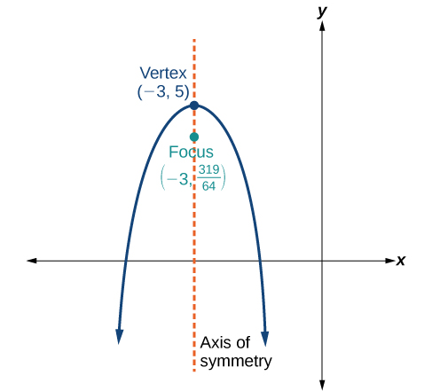
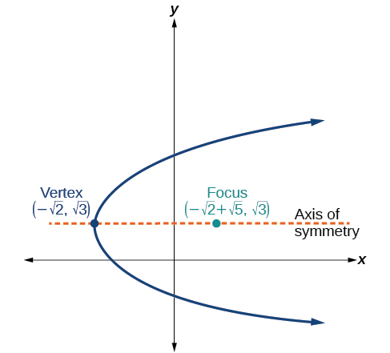
Solution
Extensions
For the following exercises, the vertex and endpoints of the latus rectum of a parabola are given. Find the equation.
, Endpoints ,
, Endpoints ,
Solution
, Endpoints ,
, Endpoints ,
Solution
, Endpoints ,
Real-World Applications
The mirror in an automobile headlight has a parabolic cross-section with the light bulb at the focus. On a schematic, the equation of the parabola is given as At what coordinates should you place the light bulb?
Solution
If we want to construct the mirror from the previous exercise such that the focus is located at what should the equation of the parabola be?
A satellite dish is shaped like a paraboloid of revolution. This means that it can be formed by rotating a parabola around its axis of symmetry. The receiver is to be located at the focus. If the dish is 12 feet across at its opening and 4 feet deep at its center, where should the receiver be placed?
Solution
At the point 2.25 feet above the vertex.
Consider the satellite dish from the previous exercise. If the dish is 8 feet across at the opening and 2 feet deep, where should we place the receiver?
The reflector in a searchlight is shaped like a paraboloid of revolution. A light source is located 1 foot from the base along the axis of symmetry. If the opening of the searchlight is 3 feet across, find the depth.
Solution
0.5625 feet
If the reflector in the searchlight from the previous exercise has the light source located 6 inches from the base along the axis of symmetry and the opening is 4 feet, find the depth.
An arch is in the shape of a parabola. It has a span of 100 feet and a maximum height of 20 feet. Find the equation of the parabola, and determine the height of the arch 40 feet from the center.
Solution
height is 7.2 feet
If the arch from the previous exercise has a span of 160 feet and a maximum height of 40 feet, find the equation of the parabola, and determine the distance from the center at which the height is 20 feet.
An object is projected so as to follow a parabolic path given by where is the horizontal distance traveled in feet and is the height. Determine the maximum height the object reaches.
Solution
2304 feet
For the object from the previous exercise, assume the path followed is given by Determine how far along the horizontal the object traveled to reach maximum height.